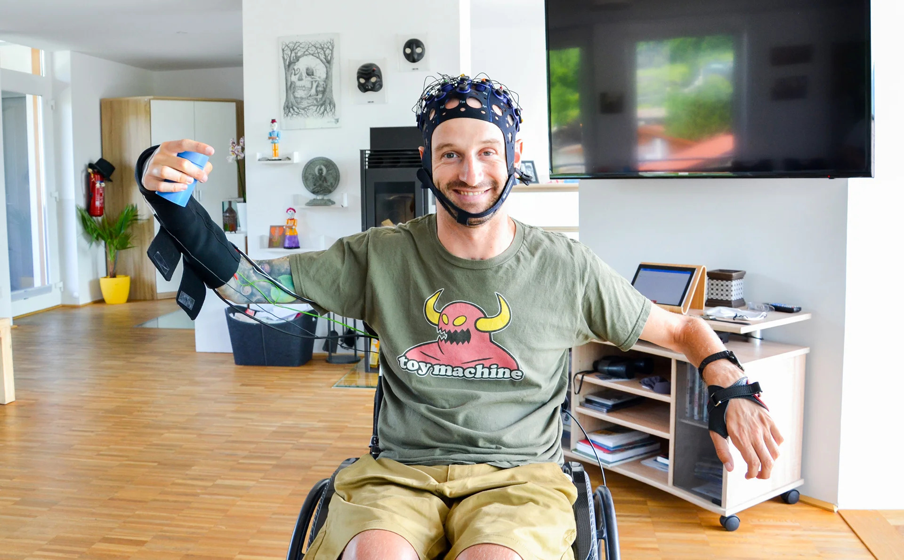

¿Qué es un dispositivo BCI y por qué es importante?
La interfaz cerebro-computadora, también conocida como tecnología de interfaz cerebro-computadora (BCI), representa un tipo innovador de dispositivo de hardware que establece una conexión directa entre el cerebro humano y una computadora.
La tecnología está diseñada principalmente para ayudar a las personas que han sufrido acontecimientos devastadores como accidentes cerebrovasculares o lesiones de la médula espinal. Estos incidentes pueden tener consecuencias importantes, incluida la parálisis de las extremidades superiores e inferiores, lo que limita significativamente la capacidad de una persona para interactuar con el mundo que la rodea.
Beneficios de la tecnología BCI para personas con discapacidades
Una de las grandes ventajas de la tecnología BCI es su capacidad de proporcionar a las personas con discapacidad severa un control eficaz de los dispositivos electrónicos. Esto les permite comunicarse con familiares y amigos sin utilizar un teclado o una pantalla táctil, lo que puede resultarles extremadamente difícil o imposible. A través de BCI, los usuarios pueden interactuar con el entorno a través de sus pensamientos, cambiando completamente su calidad de vida y otorgándoles mayor independencia.
En el campo médico, la tecnología BCI ha provocado cambios significativos. Ha mejorado las habilidades comunicativas de las personas con discapacidad física, permitiendo a los profesionales médicos realizar análisis más detallados y precisos. La capacidad de los pacientes de expresar sus necesidades y sentimientos a través de BCI también contribuye a una mejor atención y atención médica personalizada.

Impacto de la tecnología BCI en otros sectores
Además de sus aplicaciones en el ámbito sanitario, la tecnología BCI también tiene el potencial de revolucionar otros sectores, como el de los videojuegos. Los jugadores pueden disfrutar de una experiencia más interactiva e inmersiva, utilizando sus pensamientos para controlar los personajes y las acciones del juego. Esta forma de interactividad no solo mejora la experiencia del usuario, sino que también abre la puerta a nuevas formas de diseño de videojuegos que aprovechan esta tecnología.
En el sector industrial, BCI puede permitir una conexión directa entre el cerebro humano y las máquinas, facilitando operaciones más eficientes y precisas en entornos de trabajo complejos. Por ejemplo, los operadores pueden controlar maquinaria pesada solo con su mente, lo que no solo aumenta la eficiencia, sino que también puede reducir el riesgo de lesiones en el lugar de trabajo al minimizar la necesidad de manipulación física directa.
Consideraciones éticas en el uso de la tecnología BCI
Sin embargo, a pesar de los numerosos beneficios que aporta la tecnología BCI, también plantea importantes cuestiones éticas y morales que no pueden ignorarse. Cuestiones como la privacidad, el bienestar emocional, la seguridad de los datos y el potencial de abuso de esta tecnología son preocupaciones legítimas que deben abordarse. La posibilidad de que otros puedan acceder o manipular los pensamientos y emociones de uno genera preocupaciones sobre el control personal y la autonomía.

Historia y evolución de la tecnología BCI
La idea de la tecnología de interfaz cerebro-computadora (BCI) se originó en 1875, cuando el científico británico Richard Caton realizó uno de los primeros experimentos para observar la actividad eléctrica del cerebro. Utilizando un galvanómetro, un instrumento capaz de medir pequeñas corrientes eléctricas, Caton pudo registrar los impulsos nerviosos del cerebro de animales vivos. Este descubrimiento sentó las bases para el futuro de la electrofisiología, demostrando que el cerebro produce señales eléctricas que pueden detectarse y estudiarse.
Casi medio siglo después, en 1924, el psiquiatra alemán Hans Berger continuó el trabajo pionero de Caton y logró un hito fundamental en la historia de la neurociencia. Berger fue el primero en registrar un electroencefalograma (EEG) del cerebro humano, un avance que revolucionó nuestra comprensión de la actividad cerebral. Utilizando una serie de electrodos no invasivos colocados en el cuero cabelludo, Berger pudo medir la actividad eléctrica del cerebro humano y explorar diferentes patrones de ondas cerebrales. Uno de sus descubrimientos más destacados fue la clasificación de las ondas Alfa, que oscilan entre 8 y 12 Hz y están asociadas con el estado de relajación y descanso del cerebro. Este logro no solo abrió la puerta a la creación de tecnologías no invasivas para estudiar el cerebro, sino que también sentó las bases para lo que se convertiría en la tecnología BCI, que hoy busca transferir señales cerebrales a acción real en dispositivos electrónicos.
A lo largo del siglo XX y principios del XXI, la investigación sobre las interfaces cerebro-computadora avanzó lentamente, pero a partir de 2016 ha experimentado un crecimiento significativo gracias al creciente interés en la aplicación de estas tecnologías en la vida cotidiana. Ese año, la comunidad científica y tecnológica comenzó a experimentar con nuevas formas de leer y procesar señales cerebrales, impulsada por la aparición de tecnologías más potentes y precisas.
Una de las novedades más destacadas es la creación de Neuralink, una empresa fundada por el multimillonario estadounidense Elon Musk. Neuralink ha sido pionero en el desarrollo de dispositivos BCI invasivos que se conectan directamente al cerebro mediante microelectrodos implantados. Sus objetivos son ambiciosos: permitir a las personas controlar dispositivos electrónicos, como teléfonos móviles o prótesis robóticas, solo con sus pensamientos. Neuralink también busca desarrollar aplicaciones médicas para tratar trastornos neurológicos como la enfermedad de Parkinson, la epilepsia o incluso devolver la movilidad a personas paralizadas.
Impulsados por avances en inteligencia artificial y neurotecnología, los dispositivos BCI están evolucionando rápidamente y podrían revolucionar muchos campos, desde la medicina hasta la industria del entretenimiento, a medida que nos acercamos a una integración más profunda entre el cerebro humano y las máquinas.

Dispositivos que están siendo reemplazados por la tecnología BCI
En los últimos tiempos, la tecnología de interfaz cerebro-computadora (BCI) ha comenzado a reemplazar muchos productos tecnológicos tradicionales. Aunque todavía es una tecnología en desarrollo, ha empezado a sustituir dispositivos como teclados y ratones, sistemas de control por voz, controles manuales utilizados en prótesis robóticas, e incluso controladores de videojuegos. La capacidad de las BCI para interpretar señales neuronales y traducirlas en acciones marca un cambio significativo en la forma en que interactuamos con la tecnología.
Los expertos predicen que, en un futuro próximo, muchos de estos dispositivos tecnológicos serán completamente sustituidos por interfaces BCI. A medida que el mundo avanza hacia la creación de dispositivos inalámbricos y sin cables, como teléfonos móviles, auriculares y ordenadores, la tecnología BCI sigue la misma tendencia. Los cables se están convirtiendo en una molestia, y cada vez se desarrollan más dispositivos electrónicos inalámbricos que pueden conectarse sin necesidad de una interfaz física tradicional.
Este avance coloca a las BCI en una posición privilegiada para integrarse más profundamente en nuestra vida diaria, eliminando la dependencia de herramientas externas y proporcionando una conexión más directa entre el cerebro y las máquinas.

Evolución de las interfaces cerebro-computadora
Desde sus inicios, la interfaz cerebro-computadora (BCI) ha recorrido un largo camino, inicialmente, los sistemas BCI eran procedimientos altamente invasivos que requerían la implantación de electrodos directamente en el cerebro, este enfoque, si bien proporciona una alta precisión en la recopilación de señales nerviosas, conlleva graves riesgos quirúrgicos, como infección, cicatrización o incluso daño permanente al tejido cerebral del paciente.
Los pacientes que eligen estos dispositivos deben someterse a procedimientos quirúrgicos complejos y costosos, lo que limita su aplicación a circunstancias muy específicas, a menudo en entornos clínicos o de investigación. Con el tiempo, el campo de las BCI ha evolucionado en una dirección menos invasiva. El desarrollo de auriculares y diademas con tecnología de electroencefalograma (EEG) ha permitido capturar señales eléctricas del cerebro sin necesidad de intervención quirúrgica. Estos dispositivos no invasivos utilizan sensores externos colocados en el cuero cabelludo, lo que proporciona una opción mucho más segura, aunque sus lecturas inicialmente son menos precisas y se ven afectadas por el ruido del pulso circundante.
Sin embargo, a medida que mejoraron los avances en la electrónica y el procesamiento de señales, estas tecnologías comenzaron a alcanzar niveles aceptables de precisión para muchas aplicaciones prácticas. En las últimas décadas, los avances en inteligencia artificial han jugado un papel clave en el desarrollo de las BCI. Algoritmos cada vez más complejos ayudan a analizar y procesar las señales cerebrales de manera más efectiva, mejorando tanto la velocidad como la precisión con la que las BCI interpretan las intenciones del usuario.
Este avance ha reducido la brecha entre las BCI invasivas y no invasivas, haciendo que los dispositivos sean más seguros, además de funcionales y precisos. Hoy en día, las BCI se encuentran en medio de una aceleración tecnológica hacia interfaces cada vez más eficientes y accesibles. Los sistemas que se están desarrollando combinan tecnología de sensores avanzada con inteligencia artificial para crear interfaces que no solo son menos invasivas, sino también más adaptadas a las características personales de cada usuario. La tendencia a hacer que las BCI sean más fáciles de usar y menos dependientes de procedimientos invasivos marca un cambio fundamental en la forma en que interactuamos con las máquinas, y ofrece un futuro prometedor para la integración de la tecnología cerebro-computadora en nuestra vida diaria.

Recursos adicionales sobre la interacción humano-computadora
Recurso: https://thedecisionlab.com/languages/es-es/reference-guide/design/human-computer-interaction
Referencias
The Decision Lab. (2024). Interacción Persona-Ordenador. The Decision Lab. Retrieved October 18, 2024, from https://thedecisionlab.com/languages/es-es/reference-guide/design/human-computer-interaction
Softtek. (2021, septiembre 3). Nuevas tendencias en Human-Computer Interaction (HCI). Softtek. https://blog.softtek.com/es/nuevas-tendencias-en-human-computer-interaction-hci
Cerebrum. (2020, julio 26). El mayor logro de la neurociencia: La interfaz cerebro-computadora. Cerebrum. https://cerebrum.la/el-mayor-logro-de-la-neurociencia-la-interfaz-cerebro-computadora/
Bitbrain. (n.d.). Aplicaciones de interfaces cerebro-computador. Bitbrain. https://www.bitbrain.com/es/aplicaciones/interfaces-cerebro-computador
Educational Wave. (2024, octubre 7). Pros and cons of brain-computer interface. Educational Wave. https://es.educationalwave.com/pros-and-cons-of-brain-computer-interface/
Wikipedia. (2023, octubre 9). Interfaz cerebro-computadora. Wikipedia. https://es.wikipedia.org/wiki/Interfaz_cerebro-computadora
Softtek. (2021, mayo 17). El éxito de las primeras interfaces cerebro-ordenador (BCI). Softtek. https://blog.softtek.com/es/el-exito-de-la-primeras-interfaces-cerebro-ordenador-bci